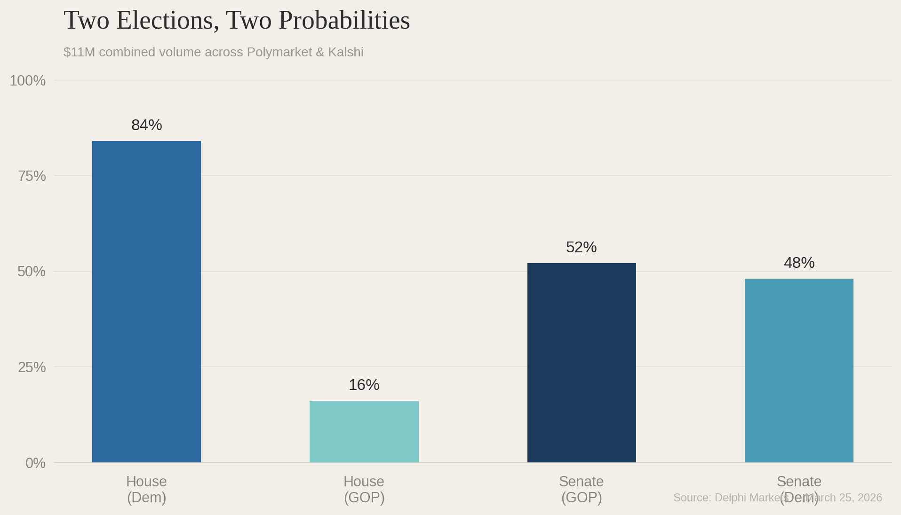
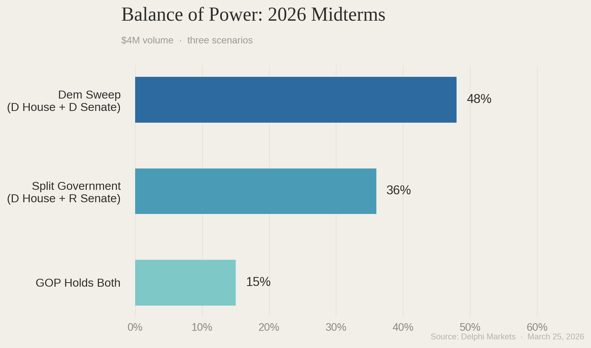
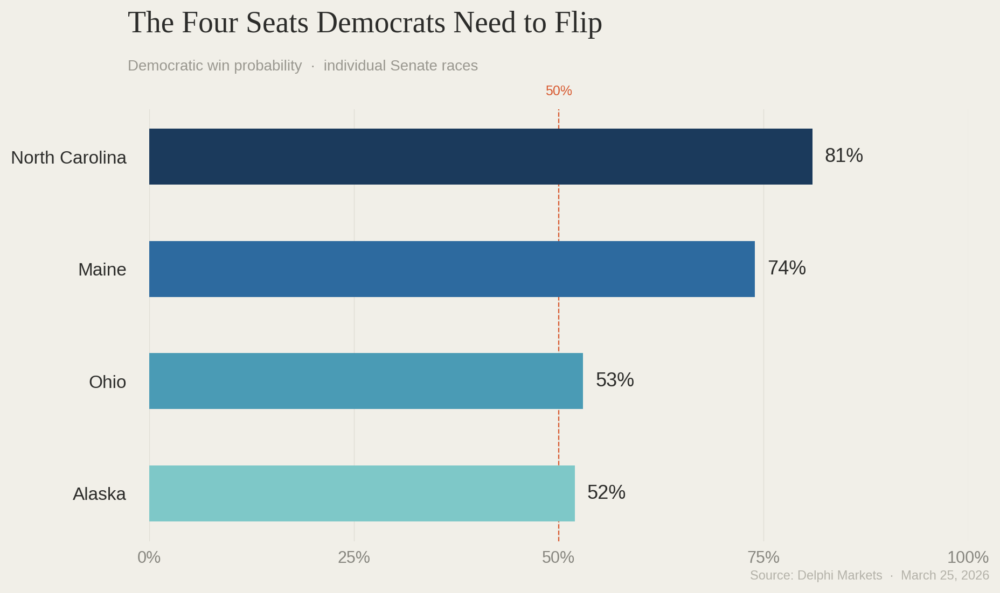
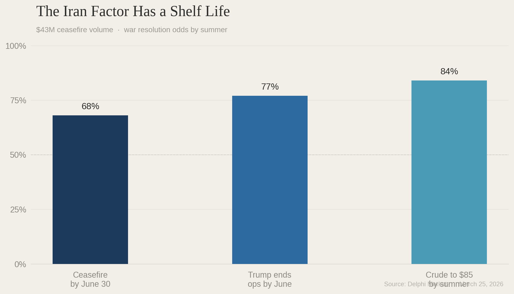

On March 6, CNN reported "encouraging signs" for Democrats after the Texas and North Carolina primaries. "Turnout in the Texas Democratic primary hit record levels for a midterm year, with more than 2.3 million ballots cast." Roy Cooper "easily clinched" the North Carolina Senate nomination, pulling more votes than the entire GOP field combined. Democrats are "far more motivated to vote in the midterms than Republicans." Trump's approval is at a new low with independents. Nearly six in ten Americans disapprove of the Iran strikes.
Paragraph after paragraph, the piece builds toward a Senate takeover. $10 million in prediction market volume on the 2026 midterms says it isn't happening.
The House Is Gone. The Senate Isn't.
CNN's piece treats the midterms as a single story moving in a single direction but prediction markets separate it into two races with two very different probabilities.
Delphi prices Democrats at 84% to take the house with $10 million in volume. But the Senate is a different story entirely. With Republicans at 52% of keeping control, calling it a “democratic wave” isn’t fully honest. Instead it’s a race where a single percentage point separates two parties and the outcome could go either way.

An 84% House flip and a 52% Senate hold are two different elections. CNN writes about them as if they point in the same direction. The money says they don't.
The 37% Scenario Nobody Writes About
The Balance of Power contract asks what the combined outcome of the midterms will be. It has $4 million in volume and three outcomes worth tracking.
A Democratic sweep, where Democrats take both the House and Senate sits at 48%. Tthe scenario CNN is building towards. It’s the most likely outcome yet it’s less than a coin flip.
Right behind it at 37% is the scenario that almost no mainstream coverage mentions: Republicans lose the House but keep the Senate. More than one in three. A higher probability than full Republican control, which sits at just 15%.

The 37% outcome means Trump faces a Democratic House with power, investigation authority and ability to block every piece of legislation. However, keeping the senate means he keeps the federal judges and blocks any impeachment trial. This isn’t a blue wave but a split government with consequences that don’t look like the narrative CNN is implying.
The Four-Flip Problem
Prediction markets are also pricing the individual races. And those odds show why the Senate is a coin flip even when the House is an 84% lock.
Democrats need to flip four seats to take the Senate. Markets price each of the target races:
North Carolina is at 81% Democratic with $39,600 in weekly volume.
Maine is at 74% Democratic with $44,900 in weekly volume.
Ohio is 53% Democratic with $57,600 in weekly volume.
Alaska is at 52% Democratic with $275,000 in weekly volume, the most traded individual Senate race on the platform. Another coin flip, and the highest volume suggests the market considers this the most uncertain race in the country.

CNN's piece acknowledges this math in paragraph seven but buries under six paragraphs of sweep framing. Even if Democrats flip Maine and North Carolina, which the market considers likely, they still need both Ohio and Alaska. Two coin flips both of which have to land.
The Iran Factor Has a Shelf Life
CNN treats the Iran war as settled political damage, noting "nearly 6 in 10 Americans disapprove of the US decision to take military action in Iran." A framing that assumes this number still matters in November.

The ceasefire contract prices resolution by June 30 at 68% with $43 million behind it. A separate contract on Trump announcing the end of military operations by June sits at 77%. Crude oil traders give an 84% chance that prices fall to $85 by summer. Those three numbers together show the war is over by late spring, gas prices are declining through the summer, and by the time voters walk into polling booths in November, Iran is something that happened earlier in the year rather than something happening right now. The political assumption underpinning CNN's analysis is expiring in real time.
The real story of 2026 isn't one election. It's two. The House, where Democrats are heavy favorites and the market has moved on. And for the Senate, the markets are still watching, still trading, and still not sure who wins.